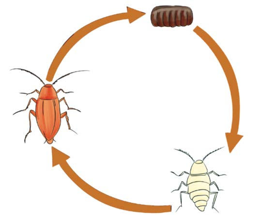

Mende hutaga mayai yaliyo katika sega gumu. Huficha mayai yake kwenye sehemu zisizoonekana kwa urahisi. Baada ya mwezi, mayai huanguliwa na kuwa tunutu. Tunutu ni mdogo kimaumbile na huwa na ngozi laini, na hana mabawa. Baada ya miezi mitatu tunutu hubadilika na kuwa mende kamili. Chunguza Kielelezo namba 7 kinachoonesha na kubainisha hatua za ukuaji wa mende.

Maelezo ya picha: Hatua za ukuaji wa mende: yai, tunutu, kisha mende mkubwa. Mishale inaonyesha mzunguko wa maisha yake.Mende
Yai
Tunutu
Kielelezo namba 7: hatua za ukuaji wa mende.
Kufanya usafi mara kwa mara na kupanga vizuri nguo, vitabu na vifaa mbalimbali itaondoa kabisa makazi na mazalia ya mende. Vilevile, mende huangamizwa kwa kutumia sumu ya kuua wadudu.
Zoezi la marudio
Sehemu A
1.
Oanisha ugonjwa kutoka Sehemu A na dalili za ugonjwa kutoka Sehemu B.
Na.
Sehemu A
Sehemu B
(a)
Malaria
(i) Husababisha vipele ambavyo hubadilika kuwa malengelenge
(b)
Tetekuwanga
(ii) Kukohoa kwa muda wa wiki mbili au zaidi
(c)
Pumu
(iii) Kukojoa mara kwa mara
(d)
Kifua kikuu
(iv) Kuharisha na kutapika mfululizo
(e)
Kisukari
(v) Kutoa sauti kama filimbi au mluzi wakati wa kupumua
(f)
Kipindupindu
(vi) Joto kali la mwili na maumivu ya viungo